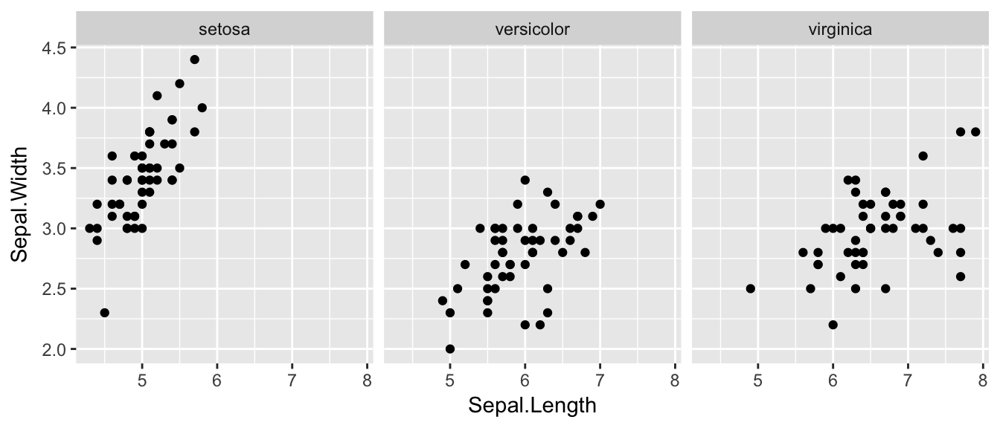
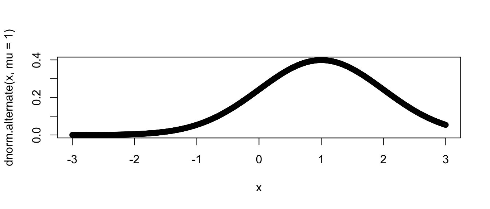
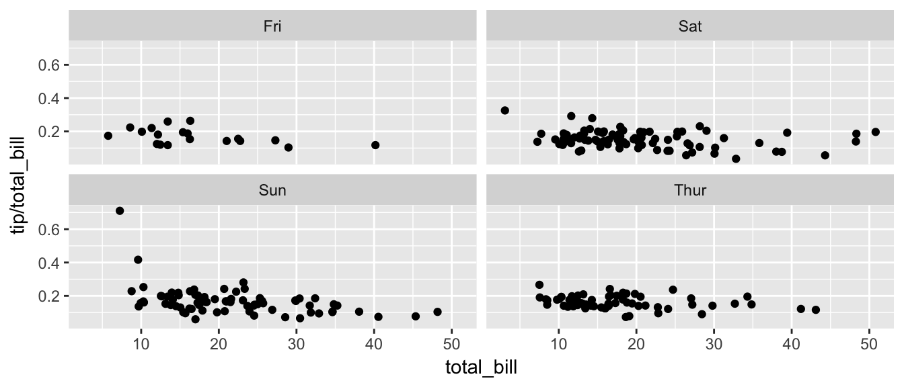
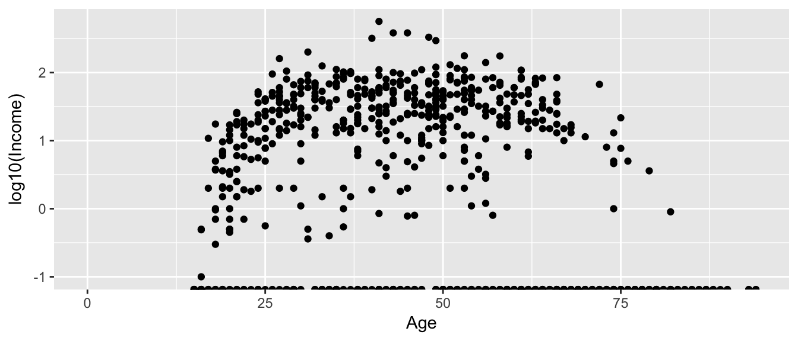
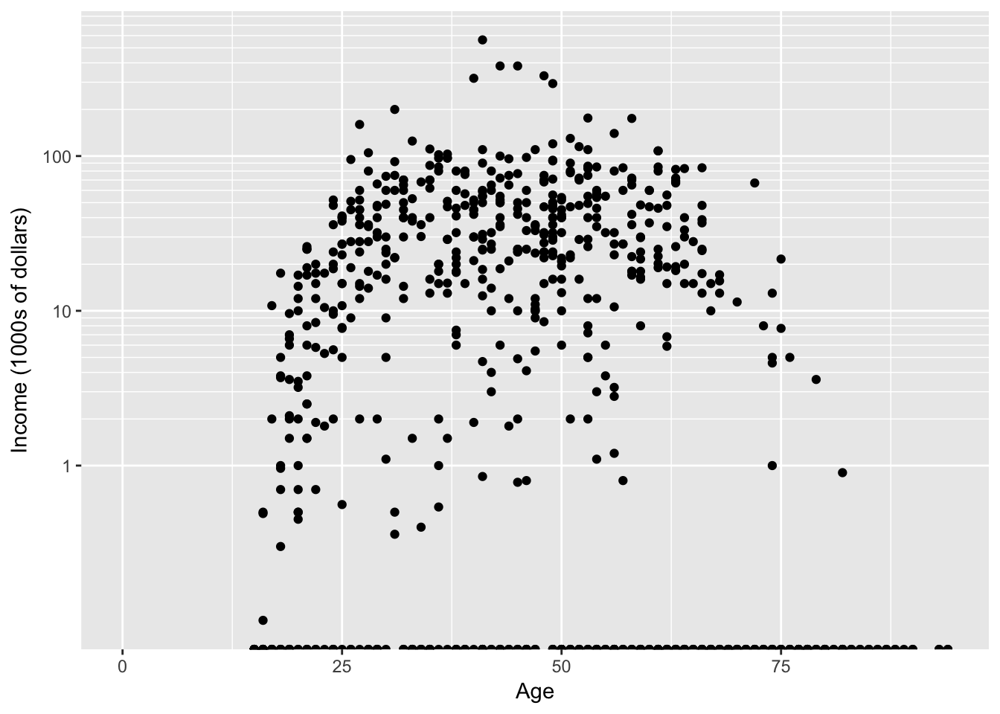
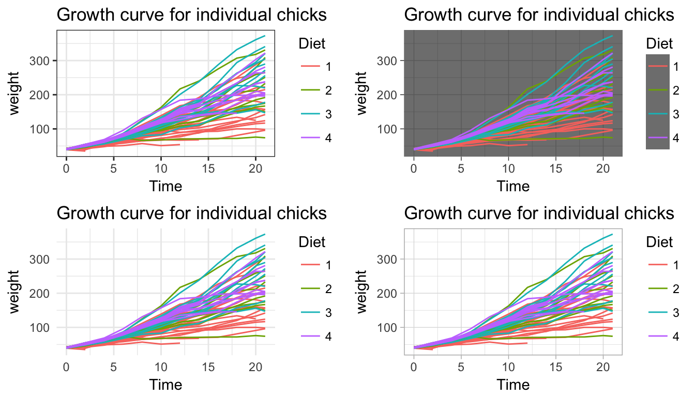
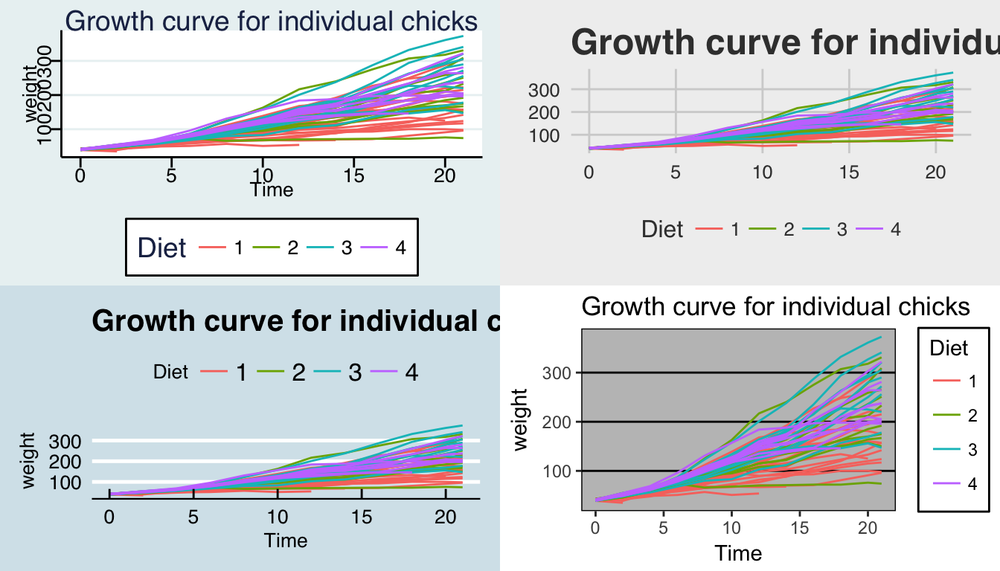

Chapter 10 More ggplot2
10.1 Faceting
The goal with faceting is to make many panels of graphics where each panel represents the same relationship between variables, but something changes between each panel. For example using the iris dataset we could look at the relationship between Sepal.Length and Petal.Length either with all the data in one graph, or one panel per species.
library(ggplot2)
ggplot(iris, aes(x=Sepal.Length, y=Sepal.Width)) +
geom_point() +
facet_grid( . ~ Species )
The line facet_grid( formula ) tells ggplot2 to make panels, and the formula tells how to orient the panels. Recall that a formula is always in the order y ~ x and because I want the species to change as we go across the page, but don’t have anything I want to change vertically we use . ~ Species to represent that. If we had wanted three graphs stacked then we could use Species ~ ..
For a second example, we look at a dataset that examines the amount a waiter was tipped by 244 parties. Covariates that were measured include the day of the week, size of the party, total amount of the bill, amount tipped, whether there were smokers in the group and the gender of the person paying the bill
data(tips, package='reshape')
head(tips)## total_bill tip sex smoker day time size
## 1 16.99 1.01 Female No Sun Dinner 2
## 2 10.34 1.66 Male No Sun Dinner 3
## 3 21.01 3.50 Male No Sun Dinner 3
## 4 23.68 3.31 Male No Sun Dinner 2
## 5 24.59 3.61 Female No Sun Dinner 4
## 6 25.29 4.71 Male No Sun Dinner 4It is easy to look at the relationship between the size of the bill and the percent tipped.
ggplot(tips, aes(x = total_bill, y = tip / total_bill )) +
geom_point()
Next we ask if there is a difference in tipping percent based on gender or day of the week by plotting this relationship for each combination of gender and day.
ggplot(tips, aes(x = total_bill, y = tip / total_bill )) +
geom_point() +
facet_grid( sex ~ day )
Sometimes we want multiple rows and columns of facets, but there is only one categorical variable with many levels. In that case we use facet_wrap which takes a one-sided formula.
ggplot(tips, aes(x = total_bill, y = tip / total_bill )) +
geom_point() +
facet_wrap( ~ day )
Finally we can allow the x and y scales to vary between the panels by setting “free”, “free_x”, or “free_y”. In the following code, the y-axis scale changes between the gender groups.
ggplot(tips, aes(x = total_bill, y = tip / total_bill )) +
geom_point() +
facet_grid( sex ~ day, scales="free_y" )
10.2 Modifying Scales
Often it is useful to modify the scales that we have on the x or y axis. In particular we might want to display some modified version of a variable.
10.2.1 Log scales
For this example, we’ll use the ACS data from the Lock5Data package that has information about Income (in thousands of dollars) and Age. Lets make a scatterplot of the data.
library(Lock5Data)
data(ACS)
ggplot(ACS, aes(x=Age, y=Income)) +
geom_point()## Warning: Removed 175 rows containing missing values (geom_point).
This is an ugly graph because six observations dominate the graph and the bulk of the data (income < $100,000) is squished together. One solution is to plot income on the \(\log_{10}\) scale. There are a couple ways to do this. The simplest way is to just do a transformation on the column of data.
ggplot(ACS, aes(x=Age, y=log10(Income))) +
geom_point()## Warning: Removed 175 rows containing missing values (geom_point).
This works quite well to see the trend of peak earning happening in a persons 40s and 50s, but the scale is difficult for me to understand (what does \(\log_{10}\left(X\right)=1\) mean here? Oh right, that is \(10^{1}=X\) so that is the $10,000 line). It would be really nice if we could do the transformation but have the labels on the original scale.
ggplot(ACS, aes(x=Age, y=Income)) +
geom_point() +
scale_y_log10()## Warning: Transformation introduced infinite values in continuous y-axis## Warning: Removed 175 rows containing missing values (geom_point).
Now the y-axis is in the original units (thousands of dollars) but obnoxiously we only have two labeled values. Lets define the major break points (the white lines that have numerical labels) to be at 1,10,100 thousand dollars in salary. Likewise we will tell ggplot2 to set minor break points at 1 to 10 thousand dollars (with steps of 1 thousand dollars) and then 10 thousand to 100 thousand but with step sizes of 10 thousand, and finally minor breaks above 100 thousand being in steps of 100 thousand.
ggplot(ACS, aes(x=Age, y=Income)) +
geom_point() +
scale_y_log10(breaks=c(1,10,100),
minor=c(1:10,
seq( 10, 100,by=10 ),
seq(100,1000,by=100))) +
ylab('Income (1000s of dollars)')## Warning: Transformation introduced infinite values in continuous y-axis## Warning: Removed 175 rows containing missing values (geom_point).
10.2.2 Arbitrary transformations
The function scale_y_log10() is actually just a wrapper to the scale_y_continuous() function with a predefined transformation. If you want to rescale function using some other function (say the inverse, or square-root, or \(\log_{2}\) ) you can use the scale_y_continuous() function (for the x-axis there is a corresponding scale_x_????) family of functions. There is a whole list of transformations built into ggplot2 that work (transformations include “asn”, “atanh”, “boxcox”, “exp”, “identity”, “log”, “log10”, “log1p”, “log2”, “logit”, “probability”, “probit”, “reciprocal”, “reverse” and “sqrt”). If you need a custom function, that can be done by defining a new transformation via the trans_new() function.
10.3 Multi-plot
There are times that you must create a graphic that is composed of several sub-graphs and think of it as one object. Unfortunately the mechanism that ggplot2 gives for this is cumbersome and it is usually easier to use a function called multiplot. The explaination I’ve heard about why this function wasn’t included in ggplot2 is that you should think about faceting first and only resort to multiplot if you have to. The function multiplot is included in a couple of packages, e.g. Rmisc, but I always just google ‘ggplot2 multiplot’ to get to the webpage [http://www.cookbook-r.com/Graphs/Multiple_graphs_on_one_page_(ggplot2)/]
# This example uses the ChickWeight dataset, which comes with ggplot2
# First plot
p1 <- ggplot(ChickWeight, aes(x=Time, y=weight, colour=Diet, group=Chick)) +
geom_line() +
ggtitle("Growth curve for individual chicks")
# Second plot
p2 <- ggplot(ChickWeight, aes(x=Time, y=weight, colour=Diet)) +
geom_point(alpha=.3) +
geom_smooth(alpha=.2, size=1) +
ggtitle("Fitted growth curve per diet")
# Third plot
p3 <- ggplot(subset(ChickWeight, Time==21), aes(x=weight, colour=Diet)) +
geom_density() +
ggtitle("Final weight, by diet")Suppose that I want to layout these three plots in an arrangement like so:
\[\textrm{layout}=\left[\begin{array}{ccc} 1 & 2 & 2\\ 1 & 2 & 2\\ 1 & 3 & 3 \end{array}\right]\]
where plot 1 is a tall, skinny plot on the left, plot 2 is more squarish, and plot 3 is short on the bottom right. This sort of table arrangement can be quite flexible if you have many rows and many columns, but generally we can get by with something with only a couple rows/columns.
my.layout = cbind( c(1,1,1), c(2,2,3), c(2,2,3) )
Rmisc::multiplot( p1, p2, p3, layout=my.layout) # Package::FunctionName
10.4 Themes
A great deal of thought went into the default settings of ggplot2 to maximize the visual clarity of the graphs. However some people believe the defaults for many of the tiny graphical settings are poor. You can modify each of these but it is often easier to modify them all at once by selecting a different theme. The ggplot2 package includes several, theme_bw(), and theme_minimal() being the two that I use most often. Below are a few to examples:
Rmisc::multiplot( p1 + theme_bw(), # Black and white
p1 + theme_minimal(),
p1 + theme_dark(),
p1 + theme_light(),
cols=2 ) # two columns of graphs 
There are more themes in the package ggthemes
library(ggthemes)
Rmisc::multiplot( p1 + theme_stata(), # Black and white
p1 + theme_economist(),
p1 + theme_fivethirtyeight(),
p1 + theme_excel(),
cols=2 ) # two columns of graphs 
Almost everything you want to modify can be modified within the theme and you should check out the ggplot2 documentation for more information and examples of how to modify different elements. [http://docs.ggplot2.org/current/theme.html]
10.5 Exercises
- We’ll next make some density plots that relate several factors towards the birthweight of a child.
- Load the
MASSlibrary, which includes the datasetbirthwtwhich contains information about 189 babies and their mothers. Add better labels to the
raceandsmokevariables using the following:library(MASS) library(dplyr) birthwt <- birthwt %>% mutate( race = factor(race, labels=c('White','Black','Other')), smoke = factor(smoke, labels=c('No Smoke', 'Smoke')))- Graph a histogram of the birthweights
bwtusingggplot(birthwt, aes(x=bwt)) + geom_histogram(). - Make separate graphs that denote whether a mother smoked during pregnancy using the
facet_grid()command. - Perhaps race matters in relation to smoking. Make our grid of graphs vary with smoking status changing vertically, and race changing horizontally (that is the formula in
facet_grid()should have smoking be the y variable and race as the x). - Remove
racefrom the facet grid, (so go back to the graph you had in part d). I’d like to next add an estimated density line to the graphs, but to do that, I need to first change the y-axis to be density (instead of counts), which we do by usingaes(y=..density..)in theggplot()aesthetics command. - Next we can add the estimated smooth density using the
geom_density()command. - To really make this look nice, lets change the fill color of the histograms to be something less dark, lets use
fill='cornsilk'andcolor='grey60'. To play with different colors that have names, check out the following: [http://www.stat.columbia.edu/~tzheng/files/Rcolor.pdf]. Change the order in which the histogram and the density line are added to the plot. Does it matter and which do you prefer?
- Load the
- Load the dataset
ChickWeightand remind yourself what the data was using ?ChickWeight. Usingfacet_wrap(), produce a scatter plot of weight vs age for each chick. Use color to distinguish the four differentDiettreatments.